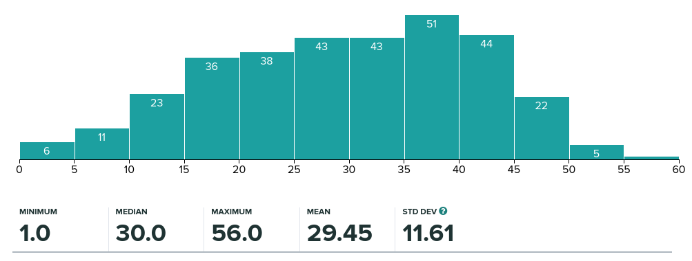

Lecture 01: Module introduction#
Module objectives#
Understand how to compute with vectors and matrices.
Appreciate the role numerical computation plays in CS.
Choose a computational model appropriately, accounting for issues of accuracy, reliability and efficiency.
Understand how to assess or measure the error in a numerical algorithm and be familiar with how such errors are controlled.
Understand the fundamental techniques for the design of efficiency numerical algorithms.
Demonstrate how these algorithms are analysed.
Understand several advanced data structures, their efficient implementation and applications.
Understand how these algorithms and data structures relate to the central practical problems of modern computer science.
Syllabus#
Vectors and matrices: introduction and justification; vector and matrix operations; identity matrix; inverse of a matrix.
Approximation and errors: modelling and mathematical modelling; discrete and continuous models; floating point and rounding errors; balancing accuracy and efficiency.
Static systems: iterative methods for solving nonlinear scalar equations; methods for solving linear systems of equations; systems without unique solutions.
Evolving systems: derivatives and rates of change; initial value problems; stability and convergence of computer models.
Numerical computation#
All administration details in the module handbook.
Contact#
Please contact me through MS Teams 23/24(1) COMP2421 Numerical Computation (32879) (not email or personal teams message)
Questions about content should go in the class team
Responses in 48h (or out of office)
No response out of working hours
How to succeed?#
Read lecture notes before lectures – all available
Turn up to lectures with pen and paper
Attempt worksheet before tutorial
Let tutorial leader know where you are having problems before the session
Attend tutorial every week - ask questions
How to get 100%?#
Exam profile last year:

Mark |
Demonstrate |
|---|---|
40-50% |
Apply all algorithms |
50-60% |
Apply modifications of algorithms |
60-70% |
Know how to explore algorithms computationally |
70%+ |
Understand why algorithms are good/bad |
95%+ |
Read and write research papers in this area |
Python#
The programming for this module will be carried out using python3.
The latest available version of python is available via Anaconda.
Anaconda provides a full scientific Python distribution, including as standard tools for numerical analysis, data visualisation, image processing, and much more!
SoC machines#
This scientific Python distribution is available on all School of Computing machines, specifically all SoC Linux computers.
On a SoC Linux computer, you can run
> module load legacy-eng # This step may be removed in future
> module add anaconda3/2020.11
and you can test your python version with
> python --version
Python 3.8.5
Notable online service#
New for this year, we have trial access to a university managed online notebook service called Notable. Access is via the minerva module page.
Your own machine!#
Alternatively, you can install anaconda python on your own machine.
Try this yourself! Make sure you can access a working version of python (version >= 3.6) and can import
numpyandscipy.
More help will be given with python programming throughout the course.
Relevance to Level 1 modules#
This module builds upon material that you have already met in your first year. Prerequisites include:
COMP1421 Fundamental mathematical concepts
COMP1721 Object oriented programming
We also add to some of the material from:
COMP1212 Computer processors
Relevance to Level 2 and 3 modules#
The material covered here is important for a large number of subject areas including Scientific Computation, Computational Modelling, Machine Learning/AI, Computer Graphics, Quantum Computing.
This module is a pre-requisite for later modules in:
COMP3811 Computer graphics
COMP3910 Combinatorial optimisation
COMP3221 Parallel computation
Other modules that will benefit from material covered here:
COMP2721 Algorithms and data structures II (level 2)
COMP2611 Artificial intelligence (level 2)
COMP3631 Intelligent systems and robotics
COMP3611 Machine learning
COMP3940 Graph algorithms and approximation
Books#
Additional useful texts
Introduction to Linear Algebra (Fifth Edition), Gilbert Strang, Wellesley-Cambridge Press, 2016.
with MIT course materialScientific Computing: An Introductory Survey, T.M. Heath, McGraw-Hill, 2002.
some lecture notes based on the bookNumerical Recipes in C++/C/FORTRAN: The Art of Scientific Computing, W.H. Press, S.A. Teukolsky, W.T. Vetterling and B.P. Flannery, Cambridge University Press, 2002/1993/1993.
Engineering Mathematics, K.A. Stroud, Macmillan, 2001. available online
Further more specific references will be given in each section of the notes.
Module components#
Lectures#
2 hours per week in this room.
Thursday 12:00-13:00 | Friday 11:00-12:00
Leeds content delivered by Tom Ranner and Yongxing Wang.
Chengdu content delivered by Zhiguo Long.
Tutorials#
1 hour per week (see timetable for your session)
Please attempt the worksheet before the session and bring your attempts with you!
Opportunity for feedback on learning.
Homework and coursework exercise#
These will be provided weekly throughout the semester.
Coursework assignments are designed to give practice and reinforce the lectures. Coursework material is examinable.
Virtual learning environment#
As with all SoC modules COMP2421 will make substantial use of the VLE: minerva.leeds.ac.uk
This will include all:
lecture notes and announcements;
coursework/homework and (later) model solutions;
links to external resources and web pages;
module-related discussions
Further support via MS Team. Please use the class team for all questions about content.
Assessment#
Title |
Release date |
Due date |
Credit |
|---|---|---|---|
Portfolio |
Mon 2 Oct |
weekly, Tuesday 2pm |
20% |
Coursework |
Mon 4 Dec |
Wed 10 Dec, 2pm |
80% |
Formative 1 |
Mon 9 Oct |
Wed 25 Oct, 2pm |
0% |
Formative 2 |
Mon 15 Nov |
Wed 29 Nov, 2pm |
0% |
The dates are tentative at this stage and are subject to change.
Portfolio (20%)#
A question similar to each worksheet is available in minerva each week.
You will have to submit your answer (and show your working) by the Tuesday 2pm deadline.
You will receive two mark for giving the correct numerical and one mark for your working.
The best 6 of 8 will count for your final mark.
No late submission allowed.
Section |
Deadline |
|---|---|
1 |
Tue 17 Oct, 2pm |
2 |
Tue 24 Oct, 2pm |
3 |
Tue 7 Nov, 2pm |
4 |
Tue 14 Nov, 2pm |
5 |
Tue 21 Nov, 2pm |
6 |
Tue 28 Nov, 2pm |
7 |
Tue 5 Dec, 2pm |
8 |
Tue 12 Dec, 2pm |
Summative coursework (80%)#
A single piece of summative coursework will count for the majority of the assessment of this module (80%). You will be asked an open ended question which allows you to explore one of the topics from the module in detail. The rubric that you will be marked against is available in minerva. The coursework will be submitted via Gradescope. Usual late submission rules apply.
Formative coursework#
There will be two additional formative courseworks which you can use to build skills related to the summative coursework. Submission and feedback mechanism details to be confirmed.
Numerical algorithms#
Numerical algorithms are those which operate on floating point numbers.
They are used to provide solutions (or approximations to solutions) of mathematical models of “real world” problems.
Such problems arise in a very wide range of applications (a few examples to follow).
An important feature of these algorithms is that they need to account for the fact that arithmetic with floating point numbers is not exact!
Applications I: Scientific and engineering computing#
Physical simulations are used for prediction in many different scientific and engineering areas.
These models are hugely complex but also hugely important!
Typically large physical domains are split up into small physical pieces which can be modelled more simply using techniques such as conservation laws.
Airflow simulations
Car manufacturer and motor spots teams often perform computer simulations to test and optimise new designs.
Video source:Gianmarco Mengaldo, Industry-relvant implicit LES via spetal/hp element methods
Economics
Most modern day economic forecasting involves performing numerical simulations.

Saul H. Hymans, Forcasting and econometric models
Weather forecasting
One of the most popular applications of numerical simulation in the UK today is in predicting tomorrow’s weather.
Video source:Met office, How weather forecasts are created
Met office, Climate modelling
Health care
Many different areas of medicine now use simulations. This can be used both as an earlier step in clinical trials in order to reduce harm to animal or human participants or to predict how medical interventions will work in practice.
Wikipedia: In silico clinical trials
Sarrami-Foroushani et al., In-silico trial of intracranial flow diverters replicates and expands insights from conventional clinical trials. Nat Commun 12, 3861 (2021).
Applications II: High performance graphics#
Realistic behaviour within games requires an accurate and efficient physics engine.
Uses Newton’s laws of motion to predict motion (e.g. projectiles, vehicles, etc) and impacts (e.g. crashes, collisions, etc).
These are examples of dynamic models which must be solved and then rendered in “real time”.
Wikipedia: Physics engine
David M Bourg, How physics is used in video games, Physics Education, issue 39, 2004.
Applications III: Artificial intelligence#
Data mining requires complex models of very large data sets in order to extract useful information from them (e.g. Google PageRank)
Self-driving cars, robotics and more rely on quick, accurate image processing and vision
Much of AI boils down to optimisation which requires special numerical methods
Robotics at Leeds
Many tasks in robotics are tested first in simulated environments where simulation plays a key role.

Pipebots
Video source:Further reading#
Met office, How weather forecasts are created
Met office, Climate modelling
Saul H. Hymans, Forcasting and econometric models
Wikipedia: Physics engine
David M Bourg, How physics is used in video games, Physics Education, issue 39, 2004.